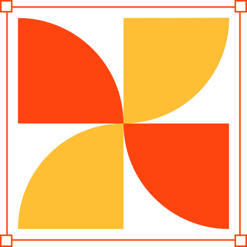

LONG FORMAT CASE STUDY GUIDE
Collect: Gather Your Raw Materials and Surface Every Decision
COLLECT: Gather Your Raw Materials and Surface Every Decision
What This Phase Is All About
This phase sets the foundation for your case study. Before you start writing anything, you must collect everything you have done. And more importantly, you must collect everything you have thought.
See, a well-built case study is not a clean retelling of perfect steps. It is a thoughtful reflection of messy progress. This phase will help you extract, tag, and structure that journey.
In this phase, you will:
- Reconstruct your full UX trail, not just outputs, but the story behind each choice
- Identify and label every meaningful asset: research, wireframes, feedback, forks, UI versions
- Surface the actual decisions you made (and unmade) along the way, across all phases
- Organize your work into clear clusters, making it findable for storytelling later
- Build a raw but structured skeleton for your case study, based on real material, not templates
- Start viewing your design process through the lens of teachable decisions, not just deliverables
Why This Phase Matters
Most case studies fail because they try to look clean. But real UX work is messy. This phase is where you prove you did not just design. You thought, explored, pivoted, and grew. Recruiters are not looking for perfect processes. They are looking for evidence of thought.
Steps to Complete the Collect Phase
InstructionsStep 1: Reconstruct Your Full UX Project Journey, End to End
Before you tag anything, you need to relive your entire journey. Revisit all the parts of your project. This is not about collecting only files. It is about reliving the journey and surfacing decisions you might have forgotten you made.
Pull out every asset that shaped your understanding:
- Early sketches, research plans, interview notes, secondary insights
- Wireframes, hypotheses, scrapped ideas, different explorations, feedback from your peers
- Do not skip docs, sticky notes, or images saved from any part of your journey
Step 2: Identify Every Meaningful Asset, Then Label and Explain It
For each major item (interview note, audit map, sketch, wireframe, flow, fork, VC feedback), you need to answer:
- What is this?
- What were you trying to figure out?
- What insight or direction did this give you?
Use Figma sticky notes, shapes, or comments to add labels right on the asset. Do not stop at design artifacts. Include inputs and conversations that shaped your thinking.
Step 3: Tag 30 to 40 Key UX Decisions Across All Phases
These could be:
- A research insight that changed your hypothesis
- A usability issue that triggered a layout change
- A feature idea you killed after questioning its necessity
- A flow fork that you resolved with user logic
Make sure that you tag not just UI decisions. You need to tag thinking decisions, trade-offs you took, text changes, even timeline compromises.
Step 4: Group All Assets Into a Proper Structure
Recruiters do not want a dump. They want structure. Group everything under clear clusters:
- By user story (e.g., search flow, booking flow)
- By design lens (e.g., visual hierarchy, user motivation)
- By process phase (e.g., early exploration, refinement, post-feedback)
Create separate Figma pages or frames so these are easy to reference later.
Step 5: Set Up Your Case Study Foundation
Do not write anything yet. Just prepare your raw thinking base. Create placeholders for different sections of your case study. Paste in links, screenshots, quotes, tagged decisions under each. Think of this as dumping your building blocks into the right buckets.
Step 6: Use the Community VC to Test Your Story
Walk your community VC through your story from start to finish using your tagged assets. Get feedback: What is clear? What is missing? Where did you change direction? Ask questions, listen closely, and offer help to others. This reflection helps sharpen your own narrative.
What Not to Do in the Collect Phase
- Do not treat your Figma like a photo album. Just pasting screens without annotations or thought trails is useless. We should feel your thinking on the canvas, not just see your steps.
- Do not confuse activity for clarity. Listing every little action ("changed font size," "moved button") does not prove your skill. The reasoning behind meaningful shifts, the why and not the what.
- Do not label decisions vaguely. "Changed layout" or "added icon" tells us nothing. Show us why it mattered, what made you do it, and what changed as a result.
- Do not copy-paste tags blindly. If your annotations feel templated or generic, you have lost the point of this exercise. Each decision should feel specific, lived, and personal.
- Do not dump everything into Figma without curation. Tagging 100 random items only buries your insight. Thoughtful selection always beats noisy documentation.
- Do not show only what worked. A strong case study shows growth, and that often comes from wrong turns. If you dropped a direction or rethought a choice, tag it and say why.
- Do not treat this phase as a checkbox. This is the heart of your case study thinking. If you rush this or just do it for the sake of it, your storytelling later will fall flat.
- Do not hide uncomfortable truths. If a feature was removed or feedback made you rethink everything, that is not failure. That is design maturity. Avoiding those moments weakens your case study.
- Do not dump research, feedback, or notes into a doc and call it done. If it is not organized and labeled, it will not help you later. And it will not help anyone reviewing your work either.
- Do not ignore emotional or people-driven moments. If a group member's feedback, a user quote, or even a peer VC moment shifted your thinking, document it. Case studies are about design decisions, not just interface changes.
- Do not only show the things that led somewhere. Sometimes, a dead-end teaches you more than your final path. Show us that thinking too, and what it revealed.
- Do not confuse case study structure with actual thinking. A clean-looking document layout means nothing if the reasoning inside is hollow. Use this phase to stock it with real thought.
Best Practices for the Collect Phase
- Bring your whole project journey, not just your outputs. Your case study begins long before the UI, so should your collection. Dig back into your user interviews, secondary research notes, messy hypotheses, wireframes, sketches, and feedback sessions. Recruiters want to see what shaped your thinking, not just where you landed.
- Tag thinking, not just doing. "Moved button left" means nothing. "Moved button left because users missed it during testing, shifting it closer to primary content improved clarity" is a real UX decision. Always tag the reason, not just the action.
- Label with future-you (and recruiters) in mind. Do not write "layout tweak" or "changed text." A week from now, even you will not remember why. Label every tag like you are explaining it to a future teammate or hiring manager: what changed, what triggered it, and what outcome it led to.
- Show your thoughts, not just final answers. Use sticky notes or shapes in Figma to narrate your decisions. If we see two explorations, we should also see what was tried, what got dropped, and why. Let the file explain itself even when you are not there to talk through it.
- Make thinking visible even in rough stages. Tag things even if they are not pixel-perfect, like sketches, unfinished wireframes, or copy explorations. Those moments are where your real UX instincts show. If you fixed something quietly, tag it anyway, that is experience at work.
- Capture your invisible work. Add notes for things that never made it to the screen: debates in your head, features you cut, paths you did not take, things you learned from usability feedback but did not fully redesign yet. Those show real maturity.
- Group your work by meaning, not layout. Do not just go screen by screen. Cluster decisions under themes like: onboarding, search, visual hierarchy, clarity gaps, feedback iteration. This makes your later writing focused and narrative-ready.
- Color-code decision types. Use different shapes or colors for types of inputs, for example: green for feedback-driven, blue for user insight-based, yellow for business constraint, red for intuition or visual clarity. This helps you and reviewers quickly see your design judgment across situations.
- Include what did not work. Great portfolios do not just show "what worked." They reveal what was considered, what was rejected, and why. This tells recruiters you are not blindly executing, you are evaluating. Even a discarded idea can show your strength if explained clearly.
- Make feedback visible, not just the changes. If someone said something that shaped your thinking, write it down. A decision without its trigger looks random. Tag the before, the feedback, and the after, so we can follow your reasoning, not just your edits.
- Surface your 'why' more than your 'what'. A screen might look clean, but what matters is why it looks that way. Show the rationale behind button placement, navigation, tone of microcopy, or information order. It is these subtle but intentional decisions that reveal design maturity.
- Audit for redundancy before moving forward. Are you tagging the same kind of change again and again? If yes, pause. Look for diverse moments: user understanding, idea shaping, flow corrections, interaction clarity, and so on. Balance your spread.
- Start building your case study outline. Create placeholder sections: Intro, Problem, Hypothesis, Research, Key Decisions, Solution Journey, Learnings. Paste links or tag references under each. You are laying the foundation now, the writing comes later.
- Think in user journeys, not just screens. When tagging or grouping decisions, ask: "What part of the user's journey was I designing for?" This keeps your case study narrative experience-driven instead of screen-driven. That is what makes a UX case study feel alive.
- Leave space to come back. If you are unsure whether a moment is worth tagging, tag it anyway with a note: "Need to reflect more." This keeps the flow going and helps you return later with clarity.
Deliverables for the Collect Phase
A Figma page titled "Case Study — Gather" that includes:
- 30 to 40 tagged design decisions (not just UI, include research, structure, copy, strategy)
- Each tag clearly labeled with what changed, why it changed, and what triggered it
- Tags grouped under meaningful themes (e.g., onboarding, search clarity, visual hierarchy)
- Use of sticky notes, color coding, or shapes to reflect types of decisions (feedback, usability, insight, etc.)
- Inclusion of rough work: wireframes, iterations, research notes, sketches, not just final UI
- An early case study skeleton, containing placeholder sections like: Intro, Problem, Research, Hypothesis, Decisions, Solution Journey, Learnings
- Screenshots, Figma links, or annotations pasted under each section
- No full paragraphs yet, just evidence and raw thought